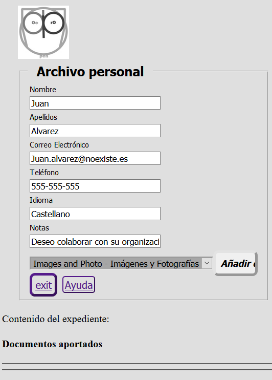
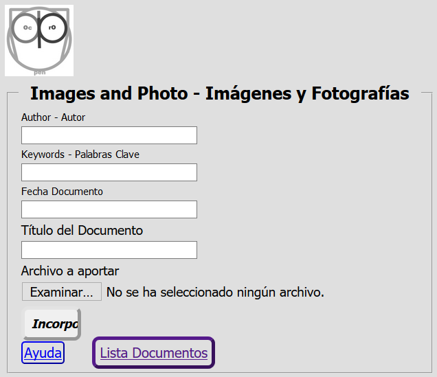

Módulo de Contribución
Introducción
El módulo de Contribución de OpenProdoc permite aportar documentación a usuarios no dados de alta de OpenProdoc por medio de pantallas totalmente configurables, de forma similar a módulo de consultas OPAC que permite consultar documentos y carpetas a usuarios externos.
Esto puede facilitar a usuarios externos a la entidad, o internos pero no dados de alta y que accederán puntualmente, el poder aportar documentación sin necesidad de formación ni conocimientos de OpenProdoc,
y evitando la gestión de usuarios cuando se puede tratar de un gran número de colaboradores muy puntuales, como podría ser colaboradores, socios o clientes de una institución.
Como en el caso del OPAC, la seguridad es crítica, ya que podría accederse a información confidencial, intentar manipularse documentos o aportar archivos dañinos o demasiado grandes que puedan perjudicar el sistema.
Para minimizar riesgos, el módulo de contribución cuenta con varias formas de seguridad y control que se detallan posteriormente.
Con la función "Módulo de Contribución" puede crearse formularios como estos:



Funcionamiento
El funcionamiento del "Módulo de Contribución", que solo requiere parametrización, es el siguiente:
- Debe elegirse o crease una carpeta dentro de OpenProdoc donde se recibirán las aportaciones de documentos y crearse (elegirse) un tipo de carpeta para agrupar esos documentos en “expedientes” con el sentido que se quiera dar (donante, fuente, fondo,...), con todos los metadatos que se considere necesarios para definir ese “expediente”.
- Dentro del total conjunto de metadatos, podrá elegirse un subconjunto de ellos que el usuario externo podrá ver, e introducir si el sistema se define como “abierto” (véase el apartado de Seguridad y Control más adelante), y varios metadatos que se utilizaran para verificar la identidad del usuario externo si este se conecta más de una vez o si el sistema es “cerrado”.
- Deberá además elegirse los tipos documentales que se admitirán, los metadatos a introducir por cada tipo documental así como los formatos de archivo.
- Cuando un usuario externo se conecta, si el sistema es “abierto” le presentará todos metadatos definidos como “públicos” para el tipo de carpeta en la configuración. El usuario rellenará todos los metadatos obligatorios (entre los que estarán los metadatos de “verificación”) y al aceptar se creará una carpeta “expediente/fondo” (contenida en la carpeta principal de aportaciones), dentro del cual se recogerán todos los documentos que el usuario aporte. Posteriormente, las personas autorizadas dentro de OpenProdoc podrán modificar los metadatos introducidos o modificar metadatos de la carpeta de uso “interno”, por ejemplo notas.
- Una vez se accede a la carpeta personal, se mostrará los documentos introducidos hasta ese momento y podrá elegirse un nuevo tipo documental a añadir. El módulo de contribución presentará un formulario de entrada con los metadatos del tipo documental elegido, así como un control para elegir el documento en sí.
Al aceptar, se incorporará el documento dentro de la carpeta, salvo que se incumpla alguna restricción, ya sea por los metadatos (como obligatoriedad, unicidad, etc.) o por el documento en sí (extensión no admitida, tamaño excesivo, ...) en cuyo caso se presentará información del error.
En otro caso se presentará una pantalla de confirmación y se volverá a presentar el contenido del expediente personal, con la documentación aportada hasta el momento.
- Cuando el usuario desee finalizar la sesión, podrá salir del sistema y volver a la pantalla de entrada.
- Si desea aportar documentos en sesiones sucesivas deberá introducir los metadatos de verificación para que el sistema puede comprobar su identidad y evitar que un usuario pueda ver el contenido de un expediente que no es suyo.
Estos metadatos cumplen la función de autenticación que habitualmente cumplen la combinación de nombre de usuario y clave de acceso, de forma que ningún otro usuario externo pueda entrar a la carpeta personal (los usuario internos autorizados por medio de ACL) siempre podrán entrar y realizar las operaciones que el ACL les permita).
- Si un sistema es cerrado, la diferencia es que solo se presentarán los metadatos de verificación y que la carpeta debe estar ya creada. Es decir el personal responsable de OpenProdoc habrá creado las carpetas adecuadas previamente y remitido la información de acceso/verificación a los usuarios que se conectarán.
- El modelo abierto puede ser aplicable a un escenario en que un gran número de usuarios desconocidos aportarán documentación, mientras que el modelo cerrado sería aplicable a un escenario donde una entidad trabaja con un número reducido de colaboradores o entidades externas, con las que quiere compartir información pero sin crearles usuarios internos de la herramienta. Hay que resaltar el término “compartir”, ya que además de aportar, todos los documentos que se depositen en la carpeta expediente serán visibles por el usuario conectado. Es decir la entidad puede depositar documentos que desea que vea ese usuario externo.
- Adicionalmente hay que tener en cuenta que en esa carpeta podrían insertarse documentos con otro ACL, de forma que no puedan ser vistos por el usuario externo pero sí por el personal interno.
- Una vez que las información se ha introducido, un usuario interno con permisos sobre la carpeta podrá revisar la documentación aportada, modificando metadatos si es necesario (para lo que se deberá crear otra versión) o reclasificando los documentos (exportando e importando de nuevo) si la clasificación era errónea.
Adicionalmente, una vez revisada la documentación podría moverse a otra carpeta “pública” desde donde pueda consultarse por medio del OPAC o incluirse en el proceso documental correspondiente.
Páginas:
El módulo de contribución maneja 4 páginas para realizar sus funciones.
Esas páginas, con una estructura por defecto ya incluida en OpenProdoc, pueden sustituirse por otras páginas (o incluso fragmentos de página o iframes si se estructura decuadamente) indicándolo en los parámetros NumHtmlCont* y el resto de parámetros relacionados.
Las páginas/pasos que componen el módulo de contribución son:
- Login: Formulario de entrada para solicitar los datos de autenticación y los de creacion de expediente si el sistema es abierto.
- Listado: Página que muestra los datos del expediente y todos los documentos contenidos en el mismo, y que permite iniciar la aportación de nuevos documentos.
- Subida de documentos: Página que permite incorporar documentos y rellear los metadatos para el tipo de documento elegido.
- Confirmación: Página que muestra el resultado (exito o error) de la operación incorporación de un documento.
Parametrización:
Pueden crearse tantos ficheros de contribución como se desee. Cada uno representará un “área de contribución” con características e interfaz diferente.
Aunque en principio estarán separadas, podría compartirse CSS, usuario interno de acceso e incluso la carpeta contenedora.
Como en el caso del OPAC, se invocará por medio de una llamada incluyendo como parámetro el identificador del fichero de contribución.
El fichero sigue el estándar habitual de los ficheros de propiedades (etiqueta+"="+Valor), admitiendo comentarios (líneas que empiezan con el caracter '#'). El significado de cada etiqueta (que no puede repetirse) es el siguiente:
- LoginFolderType: Tipo de carpeta que se utilizará para almacenar y contener los documentos aportados por los usuarios externos. Se creará una carpeta de este tipo por cada usuario.
Puede contener el número y tipo de metadatos que se considere necesarios, incluyendo metadatos de acceso, información que aporte el usuario externo y metadatos “internos” no visibles por los usuarios externos.
Para evitar duplicidades el tipo podría incluir metadatos con valores únicos. También podría definirse tareas asociadas a eventos para asignar o cambiar valores de metadatos si se desea. Ej. LoginFolderType=Donacion
- LoginFields: Esta entrada contiene los metadatos del tipo de carpeta que se utilizarán para verificar la identidad del usuario. Si el sistema es cerrado, solo se presentarán esos metadatos y se pedirán siempre.
Si es abierto se presentarán todos los incluidos en FieldsToInclude y a partir de la primera vez (en que se crea la carpeta) las siguientes veces solo se exigirá estos. El número de metadatos de verificación puede ser variable.
El mínimo es uno, pero puede incluirse dos, tres, etc. según la seguridad y confidencialidad del sistema lo requiera.
Hay que tener en cuenta que estos metadatos, desde el punto de vista de OpenProdoc son metadatos “normales” y por tanto NO están ENCRIPTADOS, por lo que no es recomendable recoger información confidencial en ellos, pues los usuarios de OpenProdoc con acceso a estas carpetas podrían verlos. Ej:LoginFields= Correo|Telef
- FieldsToInclude: Esta entrada contiene todos los metadatos del tipo de carpeta que se permitirá ver (siempre) o editar(si es abierto) al usuario.
Deberá incluirse en la lista los metadatos de login. Podrá definirse metadatos adicionales para uso interno de los usuarios de OpenProdoc (Notas, códigos, fechas, etc). Ej.: FieldsToInclude=Nombre|Apellidos|Correo|Telef|Idioma
- DocTipesList: Este parámetro contiene la lista de tipos documentales que el usuario podrá aportar. Hay que tener en cuenta que solo limita los tipos de documentos a aportar, pero que en su carpeta personal puede haber documentos de otro tipo (introducidos por ejemplo por un usuario de OpenProdoc, como ayuda o para intercambiar documentación . Ej. DocTipesList=PD_DOCS|Manual|Picture|Grabaciones
- Lista de metadatos: Para cada tipo documental incluido en DocTipesList puede incluirse una entrada con el nombre: Fields_NombreTipo que incluya una lista de los metadatos de ese tipo documental que se solicitarán al usuario.
Cualquier metadato no incluido en la lista no se solicitará (aunque podrá presentarse si el Report utilizado para mostrar resultados lo contiene).
Si no se incluye una entrada para alguno de los tipos incluidos en DocTipesList, se presentarán TODOS los metadatos de ese tipo. De la lista siempre se excluyen los metadatos internos: ACL, Doctype, LockedBy, MimeType, Name, ParentId, PDAuthor, PDDate, PDId, Purgedate, Reposit, Status, Version. Ej. Fields_Picture=Title|Author|Keywords|DocDate
- OpenContrib: Indica si el sistema es “abierto”, es decir cualquier persona puede crear carpetas o si es cerrado y por tanto las carpetas ya están creadas y el usuario externo que se conecte debe conocer TODOS los metadatos de verificación para acceder a la carpeta correspondiente . Ej.: OpenContrib=1
- BaseFolder: Indica la carpeta dentro de la cual se crearán todas las carpetas del tipo indicado en LoginFolderType.
Debe ser una carpeta donde el usuario utilizado para la contribución tenga permisos de escritura y actualización al menos. Ej.: BaseFolder=/Fondos/DonacionesUsuarios
- User: Usuario de OpenProdoc usado internamente para conectar y crear carpetas y documentos.
Debe ser un usuario con permisos limitados en carpetas (idealmente solo sobre BaseFolder) y rol (solo inserción de carpetas y documentos) tanto como sea posible para minimizar los riesgos de seguridad. Ej. User=guest1
- Pass: Password en “claro” del usuario seleccionado. Ej.: Pass= PassGuest1
- AllowedExt: Lista de extensiones de ficheros que se admitirán. Cualquier otra extensión se rechazará, para evitar la subida de ficheros ejecutables o perjudiciales. Ej.: AllowedExt=:doc|docx|xls|xlsx|ppt|pptx|txt|pdf|jpg|jpeg|tiff|tif|png|gif|odt
- MaxSize: Tamaño máximo en bytes de cada archivo subido, para evitar que se llene el sistema de archivos. Ej.: MaxSize=20000000
- ContribCSS: Identificador de la hoja de estilo css a utilizar. Puede ser un identificador de un archivo alojado en OpenProdoc o bien una url externa.
Los estilos predefinidos en la página se detallan en Estilos CSS Contribución. Ej.: ContribCSS=16697ec3694-3fe7288b86493159 o ContribCSS=http://www.portalCorporativo.com/css/estándar.css
- ContribLogo: Url del logo de las pantallas de contribución. Puede ser una url absoluta o bien una referencia a una imagen albergada en OpenProdoc. Ej.: ContribLogo=http://www.portalCorporativo.com/imgs/Logo.jpeg o ContribLogo=SendDoc?Id=43436565-aefe43434
- Title: Título a presentar en la pantalla de aportaciones. Ej.: Title=Entrada Donaciones Documentación
- TitleList: Título a presentar sobre la lista de documentos contenidos en la carpeta. Ej.: TitleList=Documentos aportados hasta el momento
- DocsReportId: Identificador del informe (Report) a utilizar para presentar documentos contenidos en la carpeta. Deberá ser un informe con un fragmento de página html que pueda “embeberse”. Ej.: DocsReportId=16654ff6af1-3f9b78099c0147a0
- UrlHelp: Página de ayuda que explique el proceso de forma general y completa. Ej. : UrlHelp= http://www.portalCorporativo.com/aportaciones/ayuda.html
- OKMsg: Texto a presentar cuando el documento se ha incorporado adecuadamente. Ej.: OKMsg=Documento Cargado Correctamente
- NumHtmlContLog: Número de páginas html de login alternativas. Para cada uno de los grupos de agentes que se enumeran deberá definirse una identificador de un documento OpenProdoc conteniendo una página html. Deberá crearse tantas parejas ListAgentLog[i], HtmlAgentLog[i] como indique esta entrada, empezando en cero. Ej.: NumHtmlContLog=2
- ListAgentLog[i]: Lista de agentes web para los que debe devolverse el html correspondiente de igual “subindice”. No es necesario incluir el nombre completo del agente, basta un fragmento del mismo, que puede incluir nombre, versión, etc. Ej.: ListAgentLog0=Firefox
- HtmlAgentLog[i]: Identificador del documento OpenProdoc con el html de login que debe devolverse para todos los agentes de igual subíndice. Ej.: HtmlAgentLog0=57576abf4-6565dde4
- NumHtmlContList: Número de páginas html alternativas de presentación del listado de documentos. Para cada uno de los grupos de agentes que se enumeran deberá definirse una identificador de un documento OpenProdoc conteniendo una página html. Deberá crearse tantas parejas ListAgentList[i], HtmlAgentList[i] como indique esta entrada, empezando en cero. Ej.: NumHtmlContList=1
- ListAgentList[i]: Lista de agentes web para los que debe devolverse el html correspondiente de igual “subindice”. No es necesario incluir el nombre completo del agente, basta un fragmento del mismo, que puede incluir nombre, versión, etc. Ej.: ListAgentList0=Firefox|Edge
- HtmlAgentList[i]: Identificador del documento OpenProdoc con el html de listado de documento que debe devolverse para todos los agentes de igual subíndice. Ej.: HtmlAgentList0=574343abf4-86976ddaa3
- NumHtmlContAdd: Número de páginas html alternativas de incorporación de documentos. Para cada uno de los grupos de agentes que se enumeran deberá definirse una identificador de un documento OpenProdoc conteniendo una página html. Deberá crearse tantas parejas ListAgentAdd[i], HtmlAgentAdd[i] como indique esta entrada, empezando en cero. Ej.: NumHtmlContAdd=3
- ListAgentAdd[i]: Lista de agentes web para los que debe devolverse el html correspondiente de igual “subindice”. No es necesario incluir el nombre completo del agente, basta un fragmento del mismo, que puede incluir nombre, versión, etc. Ej.: ListAgentAdd1=Edge|Firefox@Opera
- HtmlAgentAdd[i]: Identificador del documento OpenProdoc con el html de incorporación de documento que debe devolverse para todos los agentes de igual subíndice. Ej.: HtmlAgentAdd0=123456abf4-4477238dda3
- NumHtmlContRes: Número de páginas html alternativas de resultados de la incorporación de documentos. Para cada uno de los grupos de agentes que se enumeran deberá definirse una identificador de un documento OpenProdoc conteniendo una página html. Deberá crearse tantas parejas ListAgentRes[i], HtmlAgentRes[i] como indique esta entrada, empezando en cero. Ej.: NumHtmlContAdd=3
- ListAgentRes0: Lista de agentes web para los que debe devolverse el html correspondiente de igual “subindice”. No es necesario incluir el nombre completo del agente, basta un fragmento del mismo, que puede incluir nombre, versión, etc. Ej.: ListAgentRes0=Chrome|Opera
- HtmlAgentRes0: Identificador del documento OpenProdoc con el html de resultados incorporación de documento que debe devolverse para todos los agentes de igual subíndice. Ej.: HtmlAgentRes0=1885ffeebf4-4900462aaf3
Si el User-Agent del navegador no contiene ninguna de las entradas indicadas, entonces se utilizará las plantillas internas incluidas en OpenProdoc. Puede incluirse páginas alternativas solo para alguno de los elementos (login, listado, ..), no es necesario hacerlo para todos.
El proceso de parametrizar un punto de consulta consiste en crear un archivo de texto con el contenido citado (puede utilizarse como base el ejemplo incluido y modificarlo), introduciendo los valores adecuados a la instalación de OpenProdoc concreta.
Previamente debe modificarse el fichero de configuración de OpenProdoc (Prodoc.properties o el nombre utilizado) y añadirse 2 líneas:
User=Usuario1
Pass=ClaveUsuario1
Donde Usuario1 y ClaveUsuario1 serán datos de un usuario que tenga acceso a los distintos documentos que configuración (Contrib y Contrib_CS) que se describen a continuación.
Se recomienda que sea un usuario con un rol (perfil) limitado y con un mínimo de permisos, ya que solo debe poder acceder en modo lectura a los ficheros de configuración de la Contribución.
Como todo cambio en el fichero de configuración (Prodoc.properties), debe reiniciarse el servidor para que se lea de nuevo.
A continuación debe crearse (o modificarse el ejemplo incluido) el CSS para adaptarlo al estilo de la institución o empresa correspondiente.
Luego deberá añadirse el CSS al repositorio OpenProdoc y anotar el PdId generado.
Ese PdId es el que deberá referenciarse como parámetro ContribCSS: del fichero de configuración del módulo de contribución.
A continuacion se subirá ese fichero de configuración del módulo de contribución.
Con el Id generado deberá invocarse la url de OpenProdoc (Ej.: http://localhost:8080/ProdocWeb2/ContribLogin?Id= + el identificador del nuevo documento subido, por ejemplo http://localhost:8080/ProdocWeb2/ContribLogin?Id=566b6464a654-9696e68d686 ).
OpenProdoc presentará una página de acuerdo a los parámetros definidos en ese fichero, incluido hoja de estilo, literales, tipos documentales, etc.
Dado que toda la apariencia es parametrizable, incluidas tipologías documentales, metadatos, etc, y que está orientado a usuarios esporádicos, es razonable asumir que sea necesaria una ayuda personalizada.
Para eso se dispone de un botón que abrirá la página html cuya url se indique en la configuración. Podría ser una página externa o un documento html almacenado en OpenProdoc.
Hay que resaltar que el fichero de configuración, como cualquier documento de OpenProdoc puede ser editado y versionado, utilizándose siempre para componer el módulo de contribución la última versión publicada.
No obstante la actualización puede llevar cierto tiempo, ya que para mejorar el rendimiento la configuración no se actualiza inmediatamente, pues se utiliza una copia guardada en cache.
Dado que la parametrización se basa en un documento de OpenProdoc y el estilo en otro, es posible tener diversas parametrizaciones simultaneamente, que presenten diferentes conjuntos de documentos, distinto idioma del interfaz, distinto estilo o diferente usuario.
Suministrando a cada colectivo de usuarios la url adecuada (que solo se diferenciará en el Identificador de documento, puede ofrecerse simultaneamente muchos módulos de contribución distintos con muy poco esfuerzo.
Ejemplo de Archivo de configuración de módulo de contribución:
#======= Document configuration =============================================
# Fields used for "login"/verifiation of identity
LoginFields=Correo|Telef
# Fields of the Foolder type to ask to be filled
FieldsToInclude=Nombre|Apellidos|Correo|Telef|Idioma
# Path of folder where folders will be created
BaseFolder=/Donaciones
# Document types allowed to be uploded
DocTipesList=PD_DOCS|Manual|Picture|Grabaciones
# Non included doc types show ALL fields
#Fields_PD_DOCS=
Fields_Manual=Title|DocDate
Fields_Picture=Title|Author|Keywords|DocDate
#Fields_Grabaciones=
#======= Security ==========================================================
# Open (1) or closed (0)system. When closed, Folder MUST be created and login information transmited to external user.
OpenContrib=0
# Folder type to use
LoginFolderType=Donaciones
# UserName and Password of the user that will do the actual insert in openprodoc of Folders and docs.
# It is recmmended to be a user with a limiteed rol (only insert of folders and docs) and permissions only in the Contribution folder
User=guest1
Pass=passguest1
# Allowed extensions to upload
AllowedExt=doc|docx|xls|xlsx|ppt|pptx|txt|pdf|jpg|jpeg|tiff|tif|png|gif|odt
# MaxSize upload (bytes)
MaxSize=20000000
#======= Interface =========================================================
# Openprodoc identifier of CSS or http url of CSS
ContribCSS=16697ec3694-3fe7288b86493159
# url of logo. Can be a "local" url using the format /SendDoc?Id=Identifier of doc
ContribLogo=img/LogoProdoc.jpg
# Title to be show in login
Title=Aportaciones
# Title to be show in content of folder
TitleList=Archivo personal
# Id of Report used for showing docs infolder
DocsReportId=16654ff6af1-3f9b78099c0147a0
# Url of help
UrlHelp=
#======= Alternative htmls ==================================================
# Alternative htmls depending on agent
#---------------------------------------------
# Num alternatives for login
NumHtmlContLog=1
# Agents for login
ListAgentLog0=Edge|Firefox
# html for each agent of login
HtmlAgentLog0=166a24cd914-3fee91e7fa2c96cc
#---------------------------------------------
# Num alternatives for Lista of docs
NumHtmlContList=1
# Agents for List
ListAgentList0=Chrome
# html for each agent of List
HtmlAgentList0=166a24d2fa1-3fe05747921f306c
#---------------------------------------------
# Num alternatives for adding docs
NumHtmlContAdd=1
# Agents for adding docs
ListAgentAdd0=Opera|Chrome
# html for each agent of adding docs
HtmlAgentAdd0=166a24d90f9-3fc08534bf7753e0
#---------------------------------------------
# Num alternatives for Results adding docs
NumHtmlContRes=1
# Agents for Results adding docs
ListAgentRes0=*
# html for each agent of Results adding docs
HtmlAgentRes0=166a24de462-3fc29665f8ea9ffc
#====================================================
Automatización
Para facilitar el trabajo de los usuarios internos, es recomendable el definir tareas automáticas que notifiquen los cambios y que normalicen las entradas.
Por ejemplo, si la carpeta tiene unos metadatos Nombre, apellidos y DNI, puede ser recomendable la creación de una tarea asociada al evento “Inserción” de tipo “modificar metadatos”, que normalice el título de la carpeta con la “fórmula“ Titulo= DNI+”-“+Apellidos+”,”+Nombre (la sintaxis exacta no es esta, pero se utiliza por claridad). De esta forma se asegura que la nomenclatura es homogénea independientemente de quién introduzca los datos.
También podría crearse una tarea programada que todas las noches envíe un informe a determinado grupo con los datos de todas las carpetas creadas o actualizadas (es decir que tienen nuevos documentos) en el día, de forma que automáticamente se puede saber qué nueva documentación se ha recibido y expedientes hay que revisar sin necesidad de revisarlos uno a uno.
Seguridad y Control:
Dado que el acceso externo a un gestor documental por parte de usuarios externos sin autenticar puede implicar riesgos de diverso tipo, se ha introducido diversas medidas para minimizar el riesgo:
- La definición de un sistema como sistema cerrado permite que solo los usuarios que conozcan información de las carpetas/expedientes pueden entrar en el sistema. Aunque el sistema sea abierto, una vez creado el expediente, solo el usuario conoce los datos de acceso exigidos puede conectarse. A todos los efectos el comportamiento es similar a la creación de usuarios, que deben conocer usuario y password para entrar, exigiéndose en el caso del módulo de contribución, el conocimiento de 2 o más campos del expediente (ej NIF y teléfono, nombre y código de expediente,…).
- El usuario de aplicación de OpenProdoc que se utilice internamente para conectarse desde el módulo de contribución debería ser un usuario con los mínimos permisos. Básicamente tener un rol que solo permita crear documentos (y crear carpetas si el sistema es abierto, en otro caso no es necesario) y que solo tenga acceso a esa carpeta. Eso minimizará el riesgo si de alguna forma un usuario externo lograra acceder con ese usuario interno.
- Para evitar la introducción de archivos dañinos perjudiciales, puede parametrizarse la lista de extensiones permitidas. Si un documento que se intenta subir no tiene alguna de las extensiones incluidas en la lista, se rechazará. Eso evitará que pueda incorporarse programas ejecutables (exe, com, dll, ...) o script (bat, sh, vbs,..) que pueden contener virus o código perjudicial.
- Para evitar el desbordamiento del sistema, puede limitarse el tamaño máximo de cada archivo a subir, de forma que no pueda incorporarse archivos de varios Gigabytes que llenen el sistema de archivos y bloqueen el funcionamiento.
- La posibilidad de crear diversas configuraciones (ficheros de configuración) permite crear áreas separadas donde distintos tipos o grupos de usuarios puedan colaborar. Incluso aunque pudiera obtenerse datos de acceso a un área de contribución, no se dispondría de acceso a otro área.
Si la documentación que contiene el repositorio incluye documentación confidencial o especialmente delicada, para aumentar la seguridad la recomendación sería disponer de DOS instalaciones, una dedicada únicamente a recoger la documentación desplegada en la DMZ o nube o un área visible desde Internet y otra desplegada en un ámbito interno donde esta resida finalmente. La comunicación entre ambas puede automatizarse por medio de tareas automáticas en el repositorio de entrada que exporten la documentación (nada más introducirse o periódicamente) y otras tareas automáticas que la importen el repositorio destino.
Índice Ayuda OpenProdoc